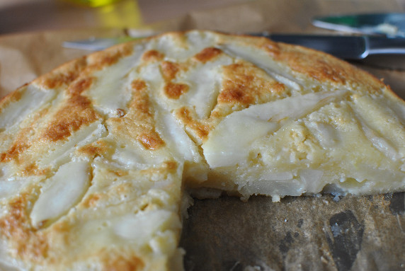

Saftiger Birnenkuchen

- Backzeit: ca. 30 Minuten
- Für 1 Springform (26 cm Durchmesser)
Zutaten
- 900 g Birnen
- 1 Pckg. Vanillezucker
- 3 EL Rum
- 100 g Mehl
- 1 1/2 gestrichene TL Backpulver
- 2 Eier
- 120 g Zucker
- 4 EL neutrales Öl
- 100 g Creme fraiche
Zubereitung
- Die Birnen schälen, entkernen und in Spalte schneiden. In eine flache Form legen. Mit dem Vanillezucker bestreuen und mit dem Rum begießen. Etwa 1 Stunde ziehen lassen. Den Backofen auf 200° Celsius vorheizen. Das Mehl mit dem Backpulver mischen.
Eier, Zucker, Öl und Creme fraiche zu einem lockeren Teig verrühren. Die Birnenspalten unterheben.
- Die Teigmasse in eine gefettete und mit Backpapier ausgelegte Springform füllen. Im vorgeheizten Ofen bei 200° Celsius 30 Minuten backen. Etwas auskühlen lassen und aus der Form lösen. Mit Puderzucker bestäuben und noch lauwarm servieren.